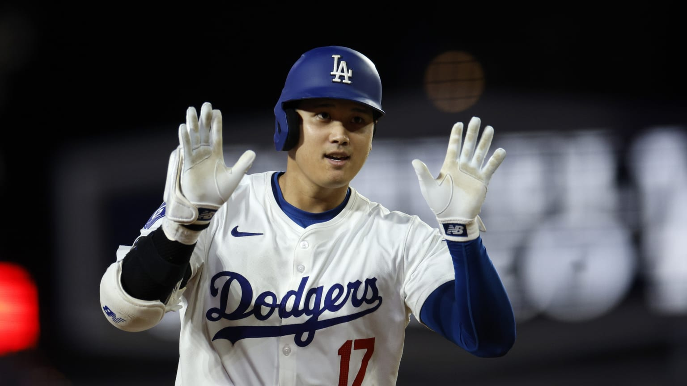
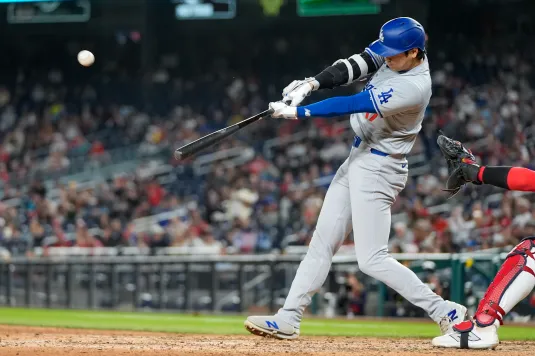
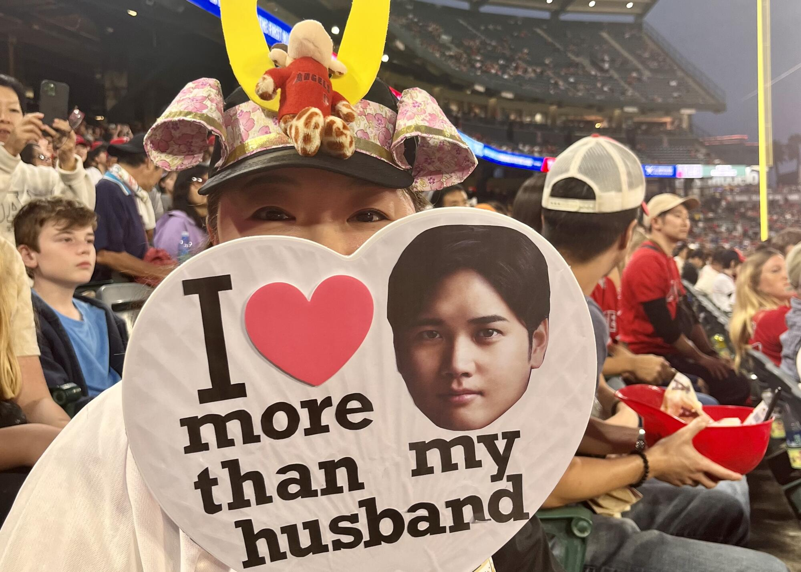

Shohei Ohtani es uno de los atletas más impactantes del béisbol moderno por su capacidad de rendir a nivel élite. Su perfil combina potencia ofensiva y habilidades de lanzador, algo muy poco común en la MLB contemporánea. Esta reseña resume su trayectoria, estilo de juego, logros y el impacto que genera dentro y fuera del terreno.

Ohtani inició su carrera profesional en Japón, donde destacó rápidamente por su combinación de talento ofensivo y capacidad de pitcheo. Al llegar a las Grandes Ligas, llamó la atención por mantener un rendimiento alto enfrentando el nivel competitivo más exigente del mundo. Con el paso de las temporadas, se consolidó como una superestrella global y un referente para nuevas generaciones de jugadores.
<Perfil estadístico: Shohei Ohtani - Baseball Reference

Ohtani se distingue por su potencia al bate, disciplina para seleccionar lanzamientos y capacidad de producir carreras en momentos importantes. Cuando lanza, suele destacar por velocidad, variedad de pitcheos y control suficiente para dominar a bateadores élite. Esta versatilidad lo convierte en un jugador extremadamente valioso, capaz de influir el juego de múltiples maneras.
Análisis y estadísticas avanzadas: Shohei Ohtani - FanGraphs
A lo largo de su carrera, Ohtani ha acumulado reconocimientos individuales que reflejan su impacto deportivo. Sus temporadas han sido analizadas por medios y expertos por su rareza estadística y por el nivel de consistencia en alto rendimiento. Además, su presencia ha impulsado la popularidad del béisbol en audiencias internacionales, especialmente en Japón y Estados Unidos.

El impacto de Ohtani no se limita a lo deportivo: también representa un puente cultural y mediático para el béisbol global. Su disciplina, profesionalismo y resultados lo han convertido en un ícono moderno y en inspiración para atletas jóvenes. Con los Dodgers, su figura aumenta la expectativa competitiva del equipo y refuerza el interés mundial por la MLB.
Artículo informativo: Shohei Ohtani (Wikipedia)